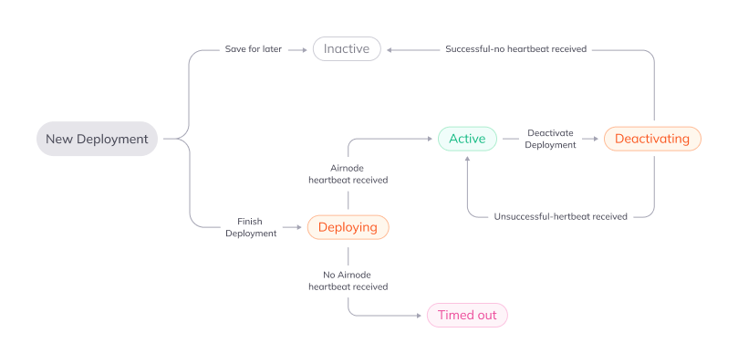

Deployments
This section will take you through deploying an Airnode. Multiple deployments can use the same integration if desired.
There are a few things needed before creating a deployment:
- A cloud provider account such as AWS or GCP
- A blockchain provider account for the networks required
- Docker
Select Deploy in the navigation bar on the left side of the page. Then click the New Deployment button. You will then be guided through the deployment process.
Integrations
The deployment will use an integration you have already created to define and deploy an Airnode to a cloud provider of your choice.
Name
Name your deployment. You won’t be able to change this after saving the deployment.
Integration
This is where you will select which integration(s) that you want to use, the version of the integration and the notes you captured during the integration associated with that version.
Cloud Provider Settings
Select the desired cloud provider and the region the Airnode should be deployed to.
Cloud provider
Select the desired cloud provider.
Region
Select the desired region for your cloud provider.
Airnode version
The latest Airnode version will be selected by default and we recommend you leave it on the latest version unless you have a specific reason to select an older version.
Networks
Here you will define which networks (chains) the Airnode will respond to.
Mainnets
These are the chains that process actual transactions.
Testnets
These are test networks that can be used for testing your deployment and integrations.
Network
Here you will see all the networks (chains) that are supported and your Airnode will respond to.
Public Providers
These are publicly available RPC URLs that provide access to the blockchain network. There is no cost while using them.
User Provided
These are private RPC URLs, controlled either by yourself or a blockchain provider, that provide access to the blockchain network.
Authorizers
Authorizer contracts allow you to specify which smart contracts can make requests to your Airnode’s endpoints.
Public authorizers allow any smart contract to make requests to your Airnode’s endpoints.
Restricted authorizers only allow smart contract addresses that have been granted access to make requests to your Airnode’s endpoints.
To learn more about authorizers, check out the API3 docs.
Review Configuration
Review the deployment configuration before continuing. Go back to make changes if needed.
Download and Deploy
Here you will download the required deployment files to perform final editing of the required secrets.
Concurrency Warning
Complete one deployment at a time. Starting multiple, simultaneous deployments will fail and need to be removed manually through your cloud provider’s web interface.
Download Files and Edit
These files are needed to deploy your Airnode.
Follow the instructions in the README to update the other files with configuration
details required for your specific setup.
Deploy with Docker
Copy and paste the relevant command based on your operating system to your terminal at the directory with your config.json and secrets.env files.
Finish Deployment
Click on the Finish Deployment button after you have completed the deployment. This will take you to your list of deployments and display their statuses.
Check status
Once your deployment is completed, it will take a few minutes for the status to update to either Active or Timed Out.
If your deployment is Active, that means that we have received the Airnode heartbeat and your Airnode is Active.
If it’s Timed Out, something went wrong and you should start by checking the troubleshooting below, and check docker for any errors during deployment.
Deployment Status and Lifecycle
These are the possible deployment statuses you might see and what they mean.
| Status | Description |
|---|---|
| Deploying | You have finished a new deployment and we are now waiting to receive a heartbeat from your Airnode |
| Active | We are receiving a heartbeat from your Airnode |
| Deactivating | You clicked Deactivate on your active deployment. Once you have run the command to deactivate your Airnode then: 1. If successful your deployment becomes Inactive 2. If unsuccessful we will receive a heartbeat which will make your deployment Active |
| Inactive | There are two scenarios for this status: 1. You started a deployment and clicked Save for later 2. You clicked Deactivate on your active deployment, ran the command to deactivate your Airnode and we stopped receiving heartbeats |
| Timed out | We have not received a heartbeat for a Deploying or Active deployment |
Lifecycle

Sub-deployments
Editing an active deployment will create a sub-deployment with a new heartbeat ID. This sub-deployment will replace your main deployment once its status is Active.
Troubleshooting
Please check if you have met all these prerequisites for your deployment:
- You have Docker installed
- You have a cloud provider account (AWS or GCP) with the provider you selected under the Cloud Provider Settings on the Settings and Networks page
- You have blockchain provider account(s) for each of the number of providers you selected under the Networks section on the Settings and Networks page
- You have populated the secrets.env file with all the requested variables
If you have met all the above, and you still have problems, please reach out to support@chainapi.com with a description of the problem you are facing and any error messages you are seeing in the command.